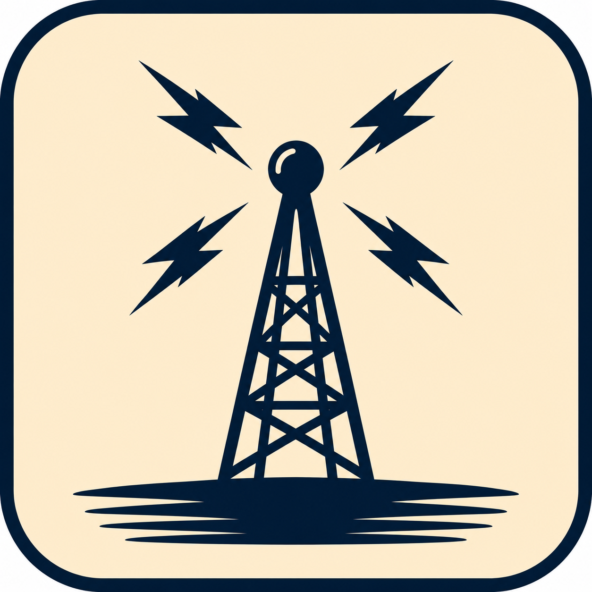

Marine Radio Operator Permit
Practice the basic radio law and operating procedures used as the foundation for several FCC commercial operator licenses.
- 144-question pool
- Required for GROL
- Useful for marine radio operations

FCCPrep.comStudy FCC Element 1, Element 3, and Element 8 with practice exams built from official FCC question pools. Use Study Mode for instant feedback, Test Mode for exam-style practice, and Review Mode to focus on missed and marked questions.
The General Radiotelephone Operator License (GROL) is an FCC-issued commercial radio operator license required for certain aviation and maritime positions.
A GROL may be required for technicians who repair or inspect aircraft radio communication and navigation equipment. Many avionics shops, airlines, repair stations, and government contractors prefer or require applicants to hold a GROL.
To earn a GROL, you must pass FCC Element 1 and Element 3 examinations. To add a radar endorsement, you must also pass Element 8. No prior experience is required, and the license does not expire.
Practice the basic radio law and operating procedures used as the foundation for several FCC commercial operator licenses.
Prepare for the technical FCC commercial radiotelephone exam commonly associated with avionics, repair stations, and radio service work.
Study radar operating principles, safety, and commercial ship radar topics for the FCC radar endorsement path.
Score history provides a useful progress metric. As a general guideline, consider consistently scoring 90% or higher on at least three consecutive practice tests before sitting for your FCC examination.
For the General Radiotelephone Operator License, candidates generally prepare for FCC Element 1 and Element 3.
Yes. FCCPrep currently includes Element 8 practice questions for ship radar endorsement preparation.
No. FCCPrep.com is an independent study tool and is not affiliated with the Federal Communications Commission.
FCCPrep is free to use. If it helped you study or saved you time, you can support future question pool updates and hosting costs.
Questions, corrections, or feedback?
fccprep@protonmail.com